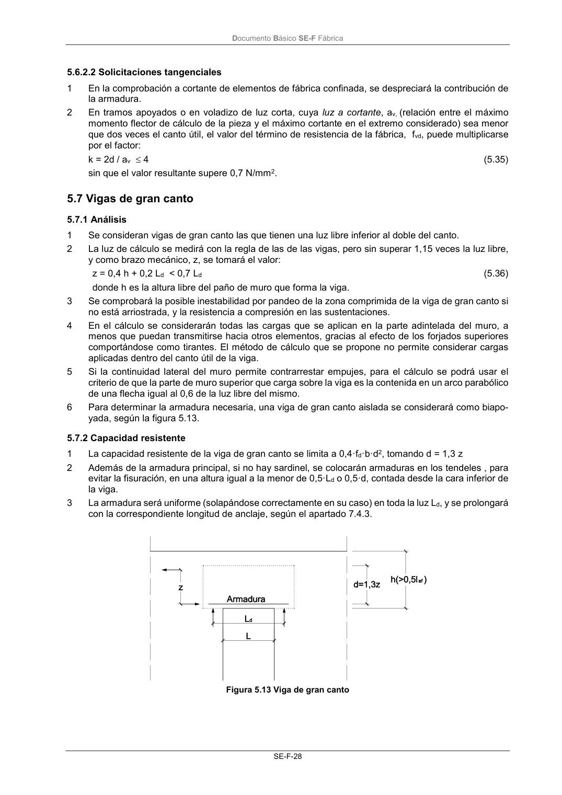

DB-SE-F Fábrica · edición 2019-12-20 · capa oficial
Documento DB-SE-F-oficial · SHA-256 del PDF e3e0805c3b4c307519c26dc34c3fdbf143d842edd013c91b0f52d2c73403d91c
Copia fiel del PDF fuente · Fuente oficial
Ficha de la disposición en la fuente oficial
Formatos: JSON del segmento · Markdown
5.6.2.2 Solicitaciones tangenciales 1 En la comprobación a cortante de elementos de fábrica confinada, se despreciará la contribución de la armadura. 2 En tramos apoyados o en voladizo de luz corta, cuya luz a cortante, av, (relación entre el máximo momento flector de cálculo de la pieza y el máximo cortante en el extremo considerado) sea menor que dos veces el canto útil, el valor del término de resistencia de la fábrica, fvd, puede multiplicarse por el factor: k = 2d / av 4 (5.35) sin que el valor resultante supere 0,7 N/mm2.
